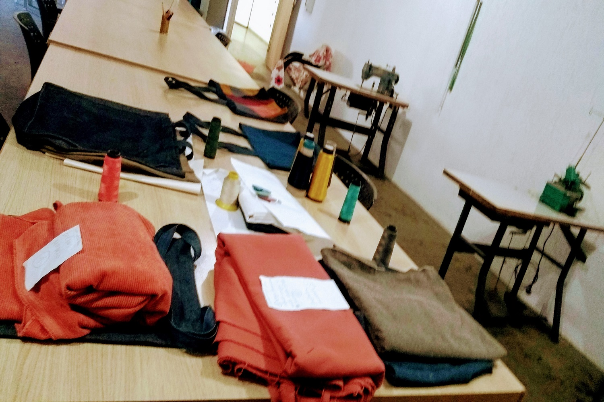
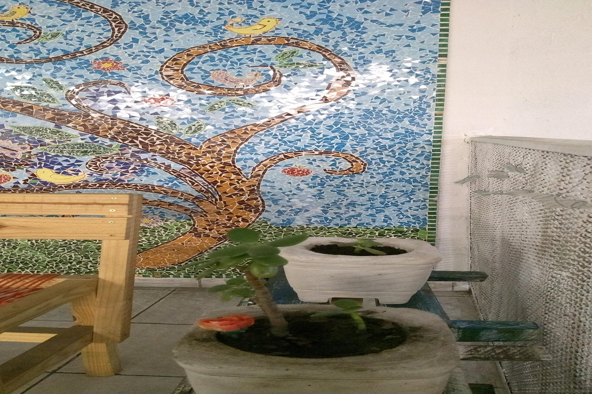
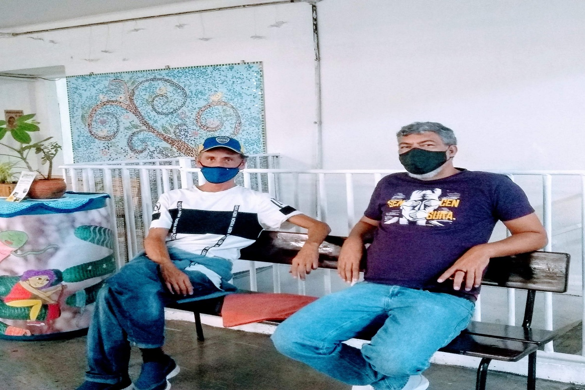

Motivos para a Ação.
O CISARTE visa ser referência de um novo paradigma de trabalho com a população em situação de rua. Por meio de uma atuação pautada pela justiça social e pela promoção da cidadania, com respeito, ética, solidariedade e transparência.



Apoiadores
Mackenzie, PUC, Uninove, Hughes, Movimento "Grito dos Excluídos" Continental, Jovens sem Fronteiras, Congregação Israelita Paulista.
Eventos
"Fala Rua" reúne o Movimento Nacional das Pessoas em Situação de Rua. Grupos de trabalho e rodas de diálogo tratam de cidadania e troca de saberes.
Consultório na Rua
Além de pediatra voluntária, o Cisarte conta com os agentes de saúde para atendendimento primário, respeitando os protocolos sanitários.
"Nós podemos mais."
(Gonzaguinha)
As perspectivas do protagonismo social e da solidariedade configuram nosso agir.
Espaço para a Esperança.
Empoderamento, Empreendedorismo, Empregabilidade, Escolarização, Encorajamento. O Cisarte escala oportunidades para todos os cidadãos.